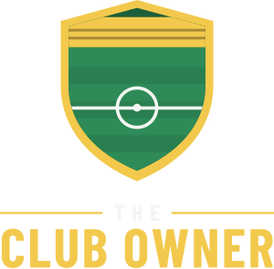

Press kit
You don't pick the team. You run the club. A football club owner game for iPhone from a solo UK developer.
Download everything (zip, 10 MB) Request a free copy
Fact sheet
- Developer
- Tom Hutchinson, solo developer, United Kingdom
- Release date
- 9 November 2026
- Platform
- iPhone (iOS 15 or later)
- Price
- £1.99 / $1.99, paid once. No ads, no account. Optional in-game money purchases
- Genre
- Football management / simulation
- App Store
- apps.apple.com/gb/app/the-club-owner/id6832031037
- Website
- tomhutchinson02.github.io/theclubowner
- Press contact
- TheClubOwnerIos@gmail.com
Description
Short: Take over a struggling football club at the bottom of a five-division pyramid and build it into champions. You're the owner, not the manager.
Long: Most football games put you in the dugout. The Club Owner puts you in the boardroom. You hire the manager, and sack them when it goes wrong, though some will need paying off. You rebuild the ground from grass banks into a modern all-seater stadium, set ticket prices, sign shirt sponsors, sell the naming rights and invest in the academy. The manager picks the team; you live with the results. Keep the fans and the board on side, or you're out.
The game has five divisions with promotion, relegation and play-offs, two domestic cups, a lower-league trophy and three continental competitions. All clubs and competitions are fictional, and players can rename them with community data packs. A relaxed sandbox mode removes the sack and bankruptcy.
Features
- Hire and fire managers, each with their own rating, wage and contract
- Build your stadium stand by stand, from grass banks to over 60,000 seats
- Ticket prices, sponsors, naming rights and a weekly season forecast
- Five-division pyramid, cups and continental competitions
- Youth academy with homegrown players every summer
- Game Center leaderboard for major trophies won (version 1.1)
- Paid once: no ads, no account, saves stay on the phone
Trailer
Download the trailer (MP4, 1080×1920, 28 seconds)
Screenshots
Full resolution (1320×2868). Click to open.


Logo and artwork


App icon (PNG, 1024×1024) · Logo (SVG) · Header artwork (PNG, 3840×1646)

About the developer
The Club Owner is made by Tom Hutchinson, an independent developer in the UK, as a one-person project. It started from a simple question: what if a football game let you be the chairman instead of the manager?